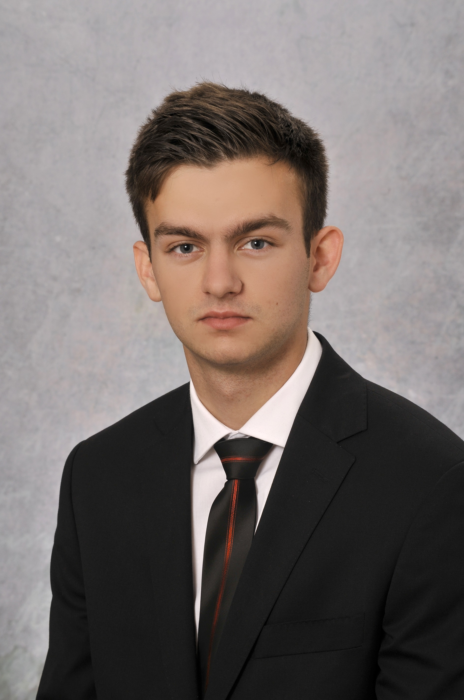

Adres
Kraków ul.Czyżyńska 21
Kontakt
723003040
pokrywkasebastian1998@gmail.com
Data urodzenia
25.06.1998
UMIEJĘTNOŚCI
- Umiejętność organizowania własnej pracy
- Umiejętność pracy w zespole
- Umiejętność skutecznego planowania
- Umiejętność zarządzanie zespołem ludz
ATUTY
- Chęć rozwoju
- Komunikatywno
- Kreatywność
- Bezkonfliktowość
ZNAJOMOŚĆ JĘZYKÓW
Angielski - średni
KURSY I CERTYFIKATY
- Kwalifikacja E12 Montaż i eksploatacja komputerówosobistych oraz urządzeń peryferyjnych
- Kwalifikacja E13 Projektowanie lokalnych siecikomputerowych i administrowanie sieciam
- Kwalifikacja E14 Tworzenie aplikacji internetowych ibaz danych oraz administrowanie bazami
ORGANIZACJE
Kolegium Sędziowskie w Jarosławiu
JĘZYKI PROGRAMOWANIA
- Python
- SQL
- HTML
- CSS
- JavaScript
- PHP
Sebastian Pokrywka
DOŚWIADCZENIE
06.2018 - obecnie
Jerónimo Martins
Sprzedawca-Kasje
06.2017 - 08.2017
Vidavo
Pracownik fizyczny
Praca sezonowa
10.2016 - 11.2016
Vidavo
Specjalista IT
Praktyki zawodowe
06.2016 - 08.2016
Vidavo
Pracownik fizyczny
Praca sezonowa
WYKSZTAŁCENIE
2018 - obecnie
Politechnika Krakowska im. Tadeusza Kościuszki
Informatyka - inżynie
2014 - 2018
Zespół Szkół Technicznych i Ogólnokształcących im.Stefana Banacha
Technik Informaty
Informatyka, Piłka nożna (Sędzia piłkarski),Nowe technologie,